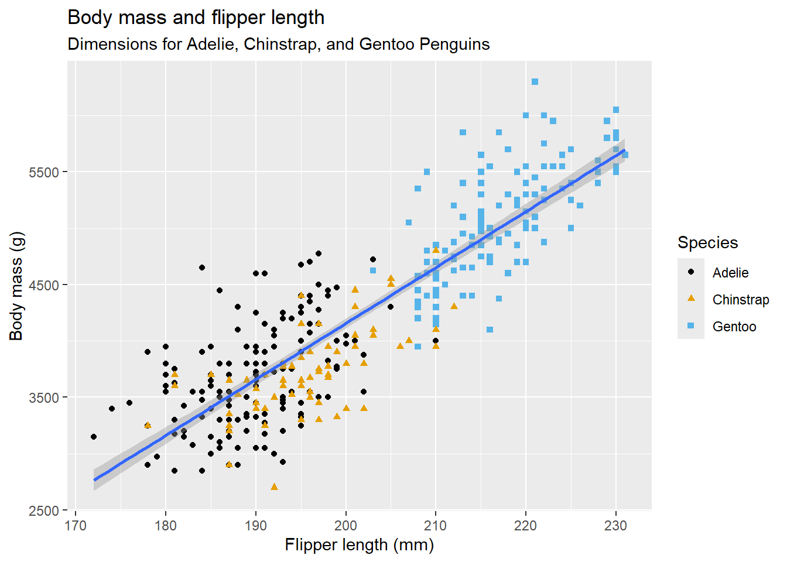

1 + 1[1] 2Re-learning R and GitHub, while trying out Quarto.
Quarto
see https://quarto.org.
Running Code
Click Render to generate document. Embed code like this:
1 + 1[1] 2Add echo: false option to disable printing of code.
Packages
Starting with the Tidyverse package, then add others as we progress:
list.of.packages <- c("tidyverse", "arrow", "babynames", "curl", "duckdb", "gapminder",
"ggrepel", "ggridges", "ggthemes", "hexbin", "janitor", "Lahman",
"leaflet", "maps", "nycflights13", "openxlsx", "palmerpenguins",
"repurrrsive", "tidymodels", "writexl")
new.packages <- list.of.packages[!(list.of.packages %in% installed.packages()[,"Package"])]
if(length(new.packages)) install.packages(new.packages,repos = "http://cran.us.r-project.org")Load in Libraries to use the functions of the packages:
#define vector of packages
new_package <- c("tidyverse", "arrow", "babynames", "curl", "duckdb", "gapminder",
"ggrepel", "ggridges", "ggthemes", "hexbin", "janitor", "Lahman",
"leaflet", "maps", "nycflights13", "openxlsx", "palmerpenguins",
"repurrrsive", "tidymodels", "writexl")
lapply(new_package, library, character.only=TRUE)── Attaching core tidyverse packages ──────────────────────── tidyverse 2.0.0 ──
✔ dplyr 1.1.4 ✔ readr 2.1.5
✔ forcats 1.0.0 ✔ stringr 1.5.1
✔ ggplot2 3.5.1 ✔ tibble 3.2.1
✔ lubridate 1.9.3 ✔ tidyr 1.3.1
✔ purrr 1.0.2
── Conflicts ────────────────────────────────────────── tidyverse_conflicts() ──
✖ dplyr::filter() masks stats::filter()
✖ dplyr::lag() masks stats::lag()
ℹ Use the conflicted package (<http://conflicted.r-lib.org/>) to force all conflicts to become errors
Attaching package: 'arrow'
The following object is masked from 'package:lubridate':
duration
The following object is masked from 'package:utils':
timestamp
Using libcurl 8.3.0 with Schannel
Attaching package: 'curl'
The following object is masked from 'package:readr':
parse_date
Loading required package: DBI
Attaching package: 'janitor'
The following objects are masked from 'package:stats':
chisq.test, fisher.test
Attaching package: 'maps'
The following object is masked from 'package:purrr':
map
── Attaching packages ────────────────────────────────────── tidymodels 1.2.0 ──
✔ broom 1.0.6 ✔ rsample 1.2.1
✔ dials 1.3.0 ✔ tune 1.2.1
✔ infer 1.0.7 ✔ workflows 1.1.4
✔ modeldata 1.4.0 ✔ workflowsets 1.1.0
✔ parsnip 1.2.1 ✔ yardstick 1.3.1
✔ recipes 1.1.0
── Conflicts ───────────────────────────────────────── tidymodels_conflicts() ──
✖ scales::discard() masks purrr::discard()
✖ dplyr::filter() masks stats::filter()
✖ recipes::fixed() masks stringr::fixed()
✖ dplyr::lag() masks stats::lag()
✖ maps::map() masks purrr::map()
✖ yardstick::spec() masks readr::spec()
✖ recipes::step() masks stats::step()
• Dig deeper into tidy modeling with R at https://www.tmwr.org[[1]]
[1] "lubridate" "forcats" "stringr" "dplyr" "purrr" "readr"
[7] "tidyr" "tibble" "ggplot2" "tidyverse" "stats" "graphics"
[13] "grDevices" "utils" "datasets" "methods" "base"
[[2]]
[1] "arrow" "lubridate" "forcats" "stringr" "dplyr" "purrr"
[7] "readr" "tidyr" "tibble" "ggplot2" "tidyverse" "stats"
[13] "graphics" "grDevices" "utils" "datasets" "methods" "base"
[[3]]
[1] "babynames" "arrow" "lubridate" "forcats" "stringr" "dplyr"
[7] "purrr" "readr" "tidyr" "tibble" "ggplot2" "tidyverse"
[13] "stats" "graphics" "grDevices" "utils" "datasets" "methods"
[19] "base"
[[4]]
[1] "curl" "babynames" "arrow" "lubridate" "forcats" "stringr"
[7] "dplyr" "purrr" "readr" "tidyr" "tibble" "ggplot2"
[13] "tidyverse" "stats" "graphics" "grDevices" "utils" "datasets"
[19] "methods" "base"
[[5]]
[1] "duckdb" "DBI" "curl" "babynames" "arrow" "lubridate"
[7] "forcats" "stringr" "dplyr" "purrr" "readr" "tidyr"
[13] "tibble" "ggplot2" "tidyverse" "stats" "graphics" "grDevices"
[19] "utils" "datasets" "methods" "base"
[[6]]
[1] "gapminder" "duckdb" "DBI" "curl" "babynames" "arrow"
[7] "lubridate" "forcats" "stringr" "dplyr" "purrr" "readr"
[13] "tidyr" "tibble" "ggplot2" "tidyverse" "stats" "graphics"
[19] "grDevices" "utils" "datasets" "methods" "base"
[[7]]
[1] "ggrepel" "gapminder" "duckdb" "DBI" "curl" "babynames"
[7] "arrow" "lubridate" "forcats" "stringr" "dplyr" "purrr"
[13] "readr" "tidyr" "tibble" "ggplot2" "tidyverse" "stats"
[19] "graphics" "grDevices" "utils" "datasets" "methods" "base"
[[8]]
[1] "ggridges" "ggrepel" "gapminder" "duckdb" "DBI" "curl"
[7] "babynames" "arrow" "lubridate" "forcats" "stringr" "dplyr"
[13] "purrr" "readr" "tidyr" "tibble" "ggplot2" "tidyverse"
[19] "stats" "graphics" "grDevices" "utils" "datasets" "methods"
[25] "base"
[[9]]
[1] "ggthemes" "ggridges" "ggrepel" "gapminder" "duckdb" "DBI"
[7] "curl" "babynames" "arrow" "lubridate" "forcats" "stringr"
[13] "dplyr" "purrr" "readr" "tidyr" "tibble" "ggplot2"
[19] "tidyverse" "stats" "graphics" "grDevices" "utils" "datasets"
[25] "methods" "base"
[[10]]
[1] "hexbin" "ggthemes" "ggridges" "ggrepel" "gapminder" "duckdb"
[7] "DBI" "curl" "babynames" "arrow" "lubridate" "forcats"
[13] "stringr" "dplyr" "purrr" "readr" "tidyr" "tibble"
[19] "ggplot2" "tidyverse" "stats" "graphics" "grDevices" "utils"
[25] "datasets" "methods" "base"
[[11]]
[1] "janitor" "hexbin" "ggthemes" "ggridges" "ggrepel" "gapminder"
[7] "duckdb" "DBI" "curl" "babynames" "arrow" "lubridate"
[13] "forcats" "stringr" "dplyr" "purrr" "readr" "tidyr"
[19] "tibble" "ggplot2" "tidyverse" "stats" "graphics" "grDevices"
[25] "utils" "datasets" "methods" "base"
[[12]]
[1] "Lahman" "janitor" "hexbin" "ggthemes" "ggridges" "ggrepel"
[7] "gapminder" "duckdb" "DBI" "curl" "babynames" "arrow"
[13] "lubridate" "forcats" "stringr" "dplyr" "purrr" "readr"
[19] "tidyr" "tibble" "ggplot2" "tidyverse" "stats" "graphics"
[25] "grDevices" "utils" "datasets" "methods" "base"
[[13]]
[1] "leaflet" "Lahman" "janitor" "hexbin" "ggthemes" "ggridges"
[7] "ggrepel" "gapminder" "duckdb" "DBI" "curl" "babynames"
[13] "arrow" "lubridate" "forcats" "stringr" "dplyr" "purrr"
[19] "readr" "tidyr" "tibble" "ggplot2" "tidyverse" "stats"
[25] "graphics" "grDevices" "utils" "datasets" "methods" "base"
[[14]]
[1] "maps" "leaflet" "Lahman" "janitor" "hexbin" "ggthemes"
[7] "ggridges" "ggrepel" "gapminder" "duckdb" "DBI" "curl"
[13] "babynames" "arrow" "lubridate" "forcats" "stringr" "dplyr"
[19] "purrr" "readr" "tidyr" "tibble" "ggplot2" "tidyverse"
[25] "stats" "graphics" "grDevices" "utils" "datasets" "methods"
[31] "base"
[[15]]
[1] "nycflights13" "maps" "leaflet" "Lahman" "janitor"
[6] "hexbin" "ggthemes" "ggridges" "ggrepel" "gapminder"
[11] "duckdb" "DBI" "curl" "babynames" "arrow"
[16] "lubridate" "forcats" "stringr" "dplyr" "purrr"
[21] "readr" "tidyr" "tibble" "ggplot2" "tidyverse"
[26] "stats" "graphics" "grDevices" "utils" "datasets"
[31] "methods" "base"
[[16]]
[1] "openxlsx" "nycflights13" "maps" "leaflet" "Lahman"
[6] "janitor" "hexbin" "ggthemes" "ggridges" "ggrepel"
[11] "gapminder" "duckdb" "DBI" "curl" "babynames"
[16] "arrow" "lubridate" "forcats" "stringr" "dplyr"
[21] "purrr" "readr" "tidyr" "tibble" "ggplot2"
[26] "tidyverse" "stats" "graphics" "grDevices" "utils"
[31] "datasets" "methods" "base"
[[17]]
[1] "palmerpenguins" "openxlsx" "nycflights13" "maps"
[5] "leaflet" "Lahman" "janitor" "hexbin"
[9] "ggthemes" "ggridges" "ggrepel" "gapminder"
[13] "duckdb" "DBI" "curl" "babynames"
[17] "arrow" "lubridate" "forcats" "stringr"
[21] "dplyr" "purrr" "readr" "tidyr"
[25] "tibble" "ggplot2" "tidyverse" "stats"
[29] "graphics" "grDevices" "utils" "datasets"
[33] "methods" "base"
[[18]]
[1] "repurrrsive" "palmerpenguins" "openxlsx" "nycflights13"
[5] "maps" "leaflet" "Lahman" "janitor"
[9] "hexbin" "ggthemes" "ggridges" "ggrepel"
[13] "gapminder" "duckdb" "DBI" "curl"
[17] "babynames" "arrow" "lubridate" "forcats"
[21] "stringr" "dplyr" "purrr" "readr"
[25] "tidyr" "tibble" "ggplot2" "tidyverse"
[29] "stats" "graphics" "grDevices" "utils"
[33] "datasets" "methods" "base"
[[19]]
[1] "yardstick" "workflowsets" "workflows" "tune"
[5] "rsample" "recipes" "parsnip" "modeldata"
[9] "infer" "dials" "scales" "broom"
[13] "tidymodels" "repurrrsive" "palmerpenguins" "openxlsx"
[17] "nycflights13" "maps" "leaflet" "Lahman"
[21] "janitor" "hexbin" "ggthemes" "ggridges"
[25] "ggrepel" "gapminder" "duckdb" "DBI"
[29] "curl" "babynames" "arrow" "lubridate"
[33] "forcats" "stringr" "dplyr" "purrr"
[37] "readr" "tidyr" "tibble" "ggplot2"
[41] "tidyverse" "stats" "graphics" "grDevices"
[45] "utils" "datasets" "methods" "base"
[[20]]
[1] "writexl" "yardstick" "workflowsets" "workflows"
[5] "tune" "rsample" "recipes" "parsnip"
[9] "modeldata" "infer" "dials" "scales"
[13] "broom" "tidymodels" "repurrrsive" "palmerpenguins"
[17] "openxlsx" "nycflights13" "maps" "leaflet"
[21] "Lahman" "janitor" "hexbin" "ggthemes"
[25] "ggridges" "ggrepel" "gapminder" "duckdb"
[29] "DBI" "curl" "babynames" "arrow"
[33] "lubridate" "forcats" "stringr" "dplyr"
[37] "purrr" "readr" "tidyr" "tibble"
[41] "ggplot2" "tidyverse" "stats" "graphics"
[45] "grDevices" "utils" "datasets" "methods"
[49] "base" Updates to the Tidyverse package can be found using:
tidyverse_update(repos = "http://cran.us.r-project.org")All tidyverse packages up-to-date##Chapter 1: Data Visualisation
Using primarily the ggplot2 package, and the palmerpenguins data, with ggthemes to use a colorblind friendly colour palette.
To see the full data use view:
view(penguins)To see variables and first few observations use glimpse:
glimpse(penguins)Rows: 344
Columns: 7
$ species <fct> Adelie, Adelie, Adelie, Adelie, Adelie, Adelie, Adel…
$ island <fct> Torgersen, Torgersen, Torgersen, Torgersen, Torgerse…
$ bill_length_mm <dbl> 39.1, 39.5, 40.3, NA, 36.7, 39.3, 38.9, 39.2, 34.1, …
$ bill_depth_mm <dbl> 18.7, 17.4, 18.0, NA, 19.3, 20.6, 17.8, 19.6, 18.1, …
$ flipper_length_mm <int> 181, 186, 195, NA, 193, 190, 181, 195, 193, 190, 186…
$ body_mass_g <int> 3750, 3800, 3250, NA, 3450, 3650, 3625, 4675, 3475, …
$ sex <fct> male, female, female, NA, female, male, female, male…Steps:
ggplot(
data = penguins,
mapping = aes(x = flipper_length_mm,
y = body_mass_g)
) +
geom_point(
mapping = aes(color = species,
shape = species)
) +
geom_smooth(method = "lm") +
labs(
title = "Body mass and flipper length",
subtitle = "Dimensions for Adelie, Chinstrap, and Gentoo Penguins",
x = "Flipper length (mm)",
y = "Body mass (g)",
color = "Species",
shape = "Species"
) +
scale_color_colorblind()`geom_smooth()` using formula = 'y ~ x'Warning: Removed 2 rows containing non-finite outside the scale range
(`stat_smooth()`).Warning: Removed 2 rows containing missing values or values outside the scale range
(`geom_point()`).
glimpse(penguins)Rows: 344
Columns: 7
$ species <fct> Adelie, Adelie, Adelie, Adelie, Adelie, Adelie, Adel…
$ island <fct> Torgersen, Torgersen, Torgersen, Torgersen, Torgerse…
$ bill_length_mm <dbl> 39.1, 39.5, 40.3, NA, 36.7, 39.3, 38.9, 39.2, 34.1, …
$ bill_depth_mm <dbl> 18.7, 17.4, 18.0, NA, 19.3, 20.6, 17.8, 19.6, 18.1, …
$ flipper_length_mm <int> 181, 186, 195, NA, 193, 190, 181, 195, 193, 190, 186…
$ body_mass_g <int> 3750, 3800, 3250, NA, 3450, 3650, 3625, 4675, 3475, …
$ sex <fct> male, female, female, NA, female, male, female, male…Answer 344 rows, 7 columns
?penguinsstarting httpd help server ... doneAnswer A number denoting bill length (millimeters)
ggplot(
data = penguins,
mapping = aes(x = bill_depth_mm,
y = bill_length_mm)
) +
geom_point(
mapping = aes(color = species,
shape = species)
) +
labs(
title = "Penguin bill length and depth",
x = "Bill depth (mm)",
y = "Bill length (mm)"
)Warning: Removed 2 rows containing missing values or values outside the scale range
(`geom_point()`).Answer Positive correlation between bill length and depth.
4.What happens if you make a scatterplot of species vs. bill_depth_mm? What might be a better choice of geom?
ggplot(
data = penguins,
mapping = aes(x = bill_depth_mm,
y = species)
) +
geom_point() +
labs(
title = "Penguin bill length and species",
x = "Bill depth (mm)",
y = "species"
)Warning: Removed 2 rows containing missing values or values outside the scale range
(`geom_point()`).Answer Nonsense plot. A better option would be a box and whisker plot
ggplot(
data = penguins,
mapping = aes(x = bill_depth_mm,
y = species)
) +
geom_boxplot() +
labs(
title = "Penguin bill length and species",
x = "Bill depth (mm)",
y = "species"
)Warning: Removed 2 rows containing non-finite outside the scale range
(`stat_boxplot()`).Answer No Aesthetic mappings for x and y
?geom_point
ggplot(
data = penguins,
mapping = aes(x = bill_depth_mm,
y = bill_length_mm)
) +
geom_point(
mapping = aes(color = species,
shape = species),
na.rm = TRUE
) +
labs(
title = "Penguin bill length and depth",
x = "Bill depth (mm)",
y = "Bill length (mm)"
)
Answer If FALSE, the default, missing values are removed with a warning. If TRUE, missing values are silently removed.
?labs
ggplot(
data = penguins,
mapping = aes(x = bill_depth_mm,
y = bill_length_mm)
) +
geom_point(
mapping = aes(color = species,
shape = species),
na.rm = TRUE
) +
labs(
title = "Penguin bill length and depth",
x = "Bill depth (mm)",
y = "Bill length (mm)",
caption = "Data come from the palmerpenguins package"
)ggplot(
data = penguins,
mapping = aes(x = flipper_length_mm,
y = body_mass_g)
) +
geom_point(
mapping = aes(color = bill_depth_mm)
) +
geom_smooth() +
labs(
x = "Flipper length (mm)",
y = "Body mass (grams)"
)`geom_smooth()` using method = 'loess' and formula = 'y ~ x'Warning: Removed 2 rows containing non-finite outside the scale range
(`stat_smooth()`).Warning: Removed 2 rows containing missing values or values outside the scale range
(`geom_point()`).###Visualising distributions
Categorical variables using bar charts
penguins |>
ggplot(aes(x = species)) +
geom_bar()
An ordered bar chart:
penguins |>
ggplot(aes(x = fct_infreq(species))) +
geom_bar()
Numerical variables using histograms
penguins |>
ggplot(aes(x = body_mass_g)) +
geom_histogram(binwidth = 200)Warning: Removed 2 rows containing non-finite outside the scale range
(`stat_bin()`).
Using a density plot
penguins |>
ggplot(aes(x = body_mass_g)) +
geom_density()Warning: Removed 2 rows containing non-finite outside the scale range
(`stat_density()`).
###Visualising relationships
Numerical and Categorical variables using box plots
penguins |>
ggplot(aes(x = species, y = body_mass_g)) +
geom_boxplot()Warning: Removed 2 rows containing non-finite outside the scale range
(`stat_boxplot()`).
Using density plots
penguins |>
ggplot(aes(x = body_mass_g, color = species)) +
geom_density(linewidth = 0.75)Warning: Removed 2 rows containing non-finite outside the scale range
(`stat_density()`).
Using filled density plots
penguins |>
ggplot(aes(x = body_mass_g, color = species, fill = species)) +
geom_density(alpha = 0.5)Warning: Removed 2 rows containing non-finite outside the scale range
(`stat_density()`).
Two Categorical variables using bar charts
penguins |>
ggplot(aes(x = island, fill = species)) +
geom_bar()
Relative frequency plots
penguins |>
ggplot(aes(x = island, fill = species)) +
geom_bar(position = "fill")
Two Numerical variables using scatterplots
penguins |>
ggplot(aes(x = flipper_length_mm, y = body_mass_g)) +
geom_point()Warning: Removed 2 rows containing missing values or values outside the scale range
(`geom_point()`).
Split the graphs to give more information
penguins |>
ggplot(aes(x = flipper_length_mm, y=body_mass_g)) +
geom_point(aes(colour = species, shape = species)) +
facet_wrap(~island)Warning: Removed 2 rows containing missing values or values outside the scale range
(`geom_point()`).
Use ggsave to save the plot to your working directory
penguins |>
ggplot(aes(x = flipper_length_mm, y=body_mass_g)) +
geom_point(aes(colour = species, shape = species)) +
facet_wrap(~island)Warning: Removed 2 rows containing missing values or values outside the scale range
(`geom_point()`).
ggsave(filename = "penguin-plot.png")Saving 7 x 5 in imageWarning: Removed 2 rows containing missing values or values outside the scale range
(`geom_point()`).```